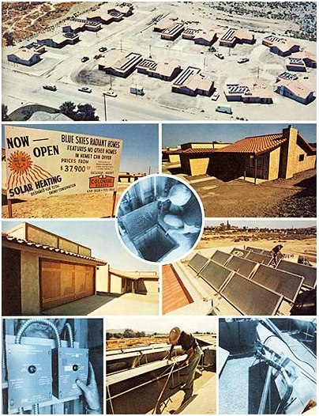

Like it or not, the "solar revolution" won't really be underway in this country until [1] solar heating and/or cooling systems are routinely built into new houses, and [2] Joe Suburb can be convinced (along with his banker) to invest money in such a home. Happily, though, these two conditions are already being met in one southern California community . . . as Nick Cominos reports.
When you drive by the first time, you might think the Blue Skies development near Hemet, California is "just another housing tract". As you approach the ten-foot-wide sign at the development's entrance, however-the one that says "NOW OPEN . . . BLUE SKIES RADIANT HOMES"-you're suddenly stopped by something unusual: namely, the words "solar heating" and "designed for total energy conservation" at the bottom of the sign, underneath a portrait of Ole Sol himself.
What the mini-billboard is saying, of course, is that the stucco haciendas in this development are solar-heated, and thus represent some of the very first solar-equipped tract homes in California . . . if not the country.
The man behind the Blue Skies development is Warren Buckmaster, a former diamond salesman who-at age 46-decided to give up precious stones and go into the home-building business with Whittier, California contractor Marvin Lauren.
Being new to housing construction, Buckmaster did a little studying up before getting started . . and he found (among other things) that [1] because of the area's benign climate, southern California contractors generally insulate their new homes poorly or not at all, and [2] as a result, homeowners here pay higher utility bills than you might have thought. The average electrically heated home in the Hemet area, Buckmaster found, was using $1,000 worth of energy per year . . . the average gas-heated household, $300 per annum. And it looks as though those costs could go up to $3,000 and $1,000, respectively, by 1986.
In light of the above information, two things seemed obvious to Warren Buckmaster. First: Given the choice, home buyers-even home buyers in southern California-would probably choose an energy-efficient house over an energy-wasteful one of equal price. Second: The smart thing for a housing developer to do would be to build a tract of reasonably priced solar-heated homes . . . homes that'd be too energy efficient for buyers to turn down.
And so Warren Buckmaster went ahead and built seventeen such houses . . . and buyers-sure enough-snapped them up. Buckmaster, in fact, managed to sell twelve of his seventeen Blue Skies dwellings months before they were even built!
What does the buyer of a Blue Skies home get when he purchases the advertised energy-efficient construction? First and foremost, insulation: more than three times as much as can be found in comparably sized tract homes just a few blocks away. Consider:
[1] The foil-backed fiberglass used to insulate the dwellings' walls exceeds the tougher, upgraded insulation code requirements that were introduced in the wake of the 1973 energy crunch. In addition, a layer of polyethylene plastic is laid between studding and wallboard of every Blue Skies home to act as a vapor barrier (thus further increasing the walls' R factor).
[2] The loose-fill, bead-type insulation used in each building's ceiling also exceeds code requirements by a wide margin (partly because Lauren and Buckmaster decided to install 35% more of this insulation than is normally used).
[3] Additional insulation is provided by the thick, interlocking earthen tiles covering the roof of every Blue Skies home. (Note: The attic of each dwelling-as you might expect-tends to get quite warm during the summer months. Lauren and Buckmaster foresaw this problem and had a thermostatically controlled fan mounted in every attic to force hot air outside during periods of sultry weather.)
[4] Double-pane glass (commonplace in eastern-U.S. houses, but a rarity in California homes) is used in all exterior windows and glass doors.
[5] Every exterior door in the development has been doubly weather-stripped.
"The secret of success when building a solar-heated home," Warren Buckmaster points out, "is to insulate the dwelling very well. We've insulated each house like a refrigerator, and-in this way-reduced our development's heating and cooling requirements by as much as fifty percent."
Although it is an "active" system-and does rely on a battery of pumps, thermostats, and heat exchange coils to function-there's nothing inherently complicated about the solar heating setup built into each Blue Skies home. (In fact, the entire system for each house was hooked up by contract plumbers who'd never worked on a solar heating installation before.) Here's how it all works:
Atop each house is an array of from nine to fourteen flat-plate solar collectors (the exact number depends on the size of the dwelling), mounted in such a way that the collectors [1] face squarely into the winter sun and [2] are not visible to an observer standing on the ground. These collectors are connected by pipes to a 1,000-gallon, insulated (with styrofoam) concrete tank underneath the home's garage. During the daytime, a pump circulates water from the underground reservoir up to the collectors (where the sun's rays warm the liquid to about 175° F) and back down again in a closed loop . . . the final result being that the water in the giant underground holding tank is kept at a fairly constant 140° F.
Deep inside the 1,000-gallon concrete tank is a 200-foot coil of copper tuning that's connected to the house's main water supply line at one end, and to a conventional gas-fired 40-gallon water heater at the other. When someone in the house turns on a hot water faucet, incoming cold water is routed through the underground reservoir (and, in the process, preheated to as high as 140°) to the gas-fired hot water tank, and then to the faucet in use.
In order to provide space heating for the house, some of the 1,000 gallons of water held in the underground storage tank can be pumped directly to a second gas-fired water heater which is-in turn-connected to a set of heat exchange coils. When space heat is desired (or when the home's thermostat clicks on), a fan blows air over the hot coils . . . and conventional ducting carries the warmed air to various rooms in the dwelling. (Once the water has passed through the heat exchange coils, it's pumped back into the underground storage tank where it again picks up Btu's for its next trip through the house.)
Of course, California isn't noted for stormy weather . . . but if the sky does turn gray, the water in those 1,000-gallon underground tanks will stay warm enough to allow the Blue Skies heating systems to operate effectively for three days. After four consecutive cloudy days, however, the "solar" part of each system shuts down automatically . . . leaving the two gas-fired water heaters in each house to take care of the dwelling's needs for warmth until Ole Sol comes out again.
OK. Granted that the Blue Skies system works, and that the dwellings in Buckmaster's development are energy efficient. What about price? How wealthy do you have to be to move into a Blue Skies Radiant Home?
The answer is "not very". Prices begin at $37,500 for a two-bedroom model and go as high as $46,000 for a larger, four-bedroom unit . . . which is easily less than you could pay today for some NON-solar-equipped new homes in southern California!
Now, of course, $37,500 isn't exactly a small amount of money . . . but-when you consider that the average new home in this country currently costs close to $50,000-it's certainly not an outrageously large sum, either. Especially when you factor in all the electric heat and fuel oil that each Blue Skies house won't use over the next twenty years.
The fact is, then, Warren Buckmaster has done something remarkable: He's incorporated solar heating into the kind of new home that (evidently) appeals to Joe Q. Public . . . and offered that house to Joe at a price he can afford. Warren Buckmaster has-in other words-brought solar energy to suburbia. And that's just what suburbia needs.
|
 PHOTOS BY N. H. COMINOS |
|
|